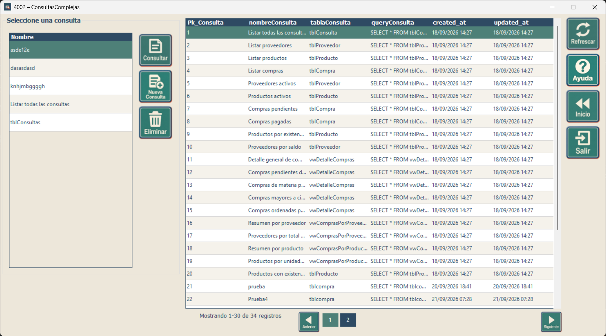

Capacitación - Consultas
Uso de consultas complejas y consultas reutilizables
Uso de consultas complejas y consultas reutilizables
Esta pantalla permite localizar, consultar, crear y administrar consultas guardadas. La tabla central muestra las consultas disponibles y la lista del lado izquierdo facilita la selección de una consulta reutilizable.

| Botón o control | Función | Cómo usarlo |
|---|---|---|
| Consultar | Abre o ejecuta la consulta seleccionada. | Seleccione primero una consulta en la lista de la izquierda y luego presione el botón. |
| Nueva Consulta | Abre la pantalla de mantenimiento para construir y guardar una nueva consulta. | Úselo cuando la consulta que necesita todavía no existe. |
| Eliminar | Elimina la consulta guardada que esté seleccionada. | Seleccione la consulta y confirme la eliminación cuando el sistema lo solicite. |
| Refrescar | Vuelve a cargar la información mostrada en pantalla. | Úselo después de crear, modificar o eliminar una consulta, o cuando desee actualizar el listado. |
| Ayuda | Muestra este manual de uso. | Presiónelo cuando necesite recordar la función de los controles de la pantalla. |
| Inicio | Regresa a la pantalla principal del componente de Consultas. | Úselo para salir de esta función sin cerrar completamente el módulo. |
| Salir | Cierra la ventana actual. | Presiónelo cuando haya terminado de trabajar en esta pantalla. |
| Anterior / Siguiente / páginas | Permiten desplazarse entre páginas de resultados. | Úselos cuando la cantidad de consultas sea mayor que la cantidad visible en una sola página. |